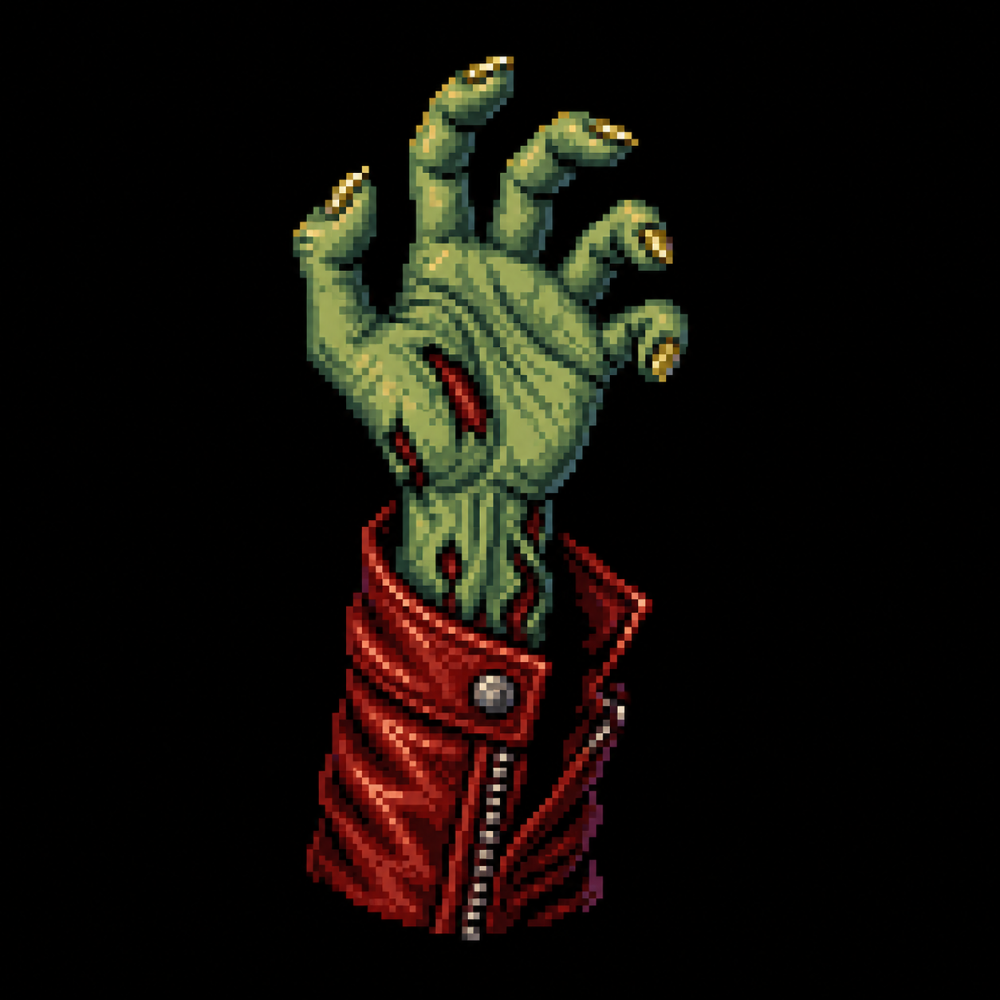

1982. L'album de tous les records. Le clip a redéfini le format court-métrage avec ses maquillages cultes et sa chorégraphie zombie.
1987. Michael devient le King of Pop. Sortie du film Moonwalker et du clip Smooth Criminal aux effets gravitationnels impossibles.
1986. Collaboration avec Lucasfilm et Disney. Une odyssée spatiale où la musique sauve une planète de l'obscurité.